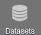
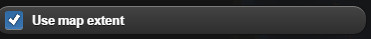
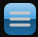
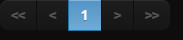
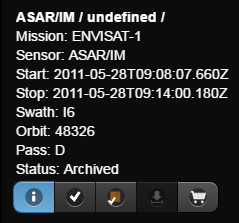
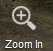

The data access services are the main functionalities of ngeo. They consist in :
catalogue searching using dataset geo-temporal criteria and/or dataset inherent criteria
retrieving products metadata and data
submitting data access requests
visualizing and manipulating data on the map.
The first and necessary step to make a catalogue search is to choose a dataset. The dataset selection widget is accessible by clicking on the  button. When the button is clicked, the widget is opened and it displays the list of available datasets. Each dataset is represented by its name and the number of items it contains.

 Only datasets with search authorization are displayed.
Only datasets with search authorization are displayed.
The icon means that you cannot view the dataset products, i.e. browse the product image in the map.
The icon means that you cannot download the datasets products.
To select a dataset, the user has to scroll out the list and choose the dataset by clicking on the list entry. It is also possible to filter the available list of datasets by the means of the filter combo boxes.

By default, all the criteria are set to "None". As soon as a criteria is chosen in one of the combo boxes, the datasets are filtered and the list is updated, taken into account the other combo boxes selected criteria.
In order to disable the filtering for a criterion, set back the selected option to "None".
Once a dataset has been selected, to set the search criteria,
the user has to click on the button  on the left toolbar.
The search criteria widget is then displayed.
on the left toolbar.
The search criteria widget is then displayed.

It is composed of several accordion, each accordion displays a search criteria type. Each button on the footer has its own role.
The Search button submits the search request to the server in order to retrieve the results. See Section 3.2.1, “Table Results”.
The Share button when clicked, displays a popup. Clik on url, a new browser window is opened, the search widget is displayed with all the search parameters set.
There search criteria types are :
They consist in the start and stop dates of the selected dataset. In order to change the selected date, click on the icon to display the calendar widget.

Choose the month and year using the combo boxes, then click on the day date. The calendar widget is closed and the chosen date does appear in the text field.
It is also possible to change the dates using a time slider. To enable the time slider, check the checkbox  .
The search widget is then hidden and the timeSlider is displayed in the bottom of the map.
.
The search widget is then hidden and the timeSlider is displayed in the bottom of the map.
Drag the time bar to move and change the time range.
It is also possible to move the time slider bar by clicking on the left and right arrows of the time slider. The bar is then moved respectively to the left or to the right.
Drag the bar left handle and the bar right handle to enlarge the time range or to make it smaller.
Each time the bar is moved or resized, a search is launched and the results are displayed on the map.
They consist in geographical criteria to be used in the search. To visualize the area widget, click on Area tab inside the search criteria widget.
The area is created using either a rectangular zone, a polygon a Gazetteer or can be imported from a file.
A rectangle search area or a BBOX is defined by :
West: the maximum longitude
East: the minimum longitude
North: the maximum latitude
South: the minimum latitude
By default, the coordinates are synchronized with the map extent. To disable this behavior uncheck the  check box. Thus the coordinates can be entered manually is each text field.
A Polygon search area is defined by its coordinates.
To enable drawing polygons, click on the Polygon button in the area widget. The polygon definition view is displayed.
Enter the polygon coordinates in the text field under 'Enter coordinates:' and then press the Draw button.
It is also possible to draw a polygon using the mouse. On the polygon view, press the Draw button, then click on the map to select a polygon edge. Move the mouse to choose another point an so on. When all the points are choosen double click to finish the definition of the polygon. The polygon widget is then displayed with the polygon coordinates.
To remove a polygon, select its coordinates in the text field, delete them an then press the Draw button.
A Gazetteer search area can be defined by clicking the area widget. The gazetteer view is displayed.

Enter the location to search in the text field and then press Enter.
The location items retrieved from the server are displayed in a list.
Click on the choosen location to define the search area.
To import a search Area click on the "Import" button in the area widget. The import view is displayed.

Drag a KML, GML or GeoJSON file from the file system and then drop it in the Drop zone of the import view.
The imported zone in the drawn on the map and a notification message appears underneath the Drop zone.
 Only KML, GML and GeoJSON files can be imported.
Only KML, GML and GeoJSON files can be imported.
They are criteria relative to the selected dataset, so they change depending on the dataset chosen.
Different datasets
can have the same criteria.
To visualize the advanced criteria, click on Advanced Filters and Download Options tab inside the search filters widget.

Each criterion is displayed by its name and a selection widget. Criteria having a range are displayed with sliders. Move the slider or set the value inside the text field to change the selected value. Criteria having a multiple selection possibilities are displayed with a list of checkboxes. Check or uncheck the check boxes to change the criterion selected value.
The Advanced Filters and Download Options are displayed per dataset choosen.

Once the search criteria have been filled in and the Search button clicked, results are availabe in a table with the products metadata in the bottom of the home page. Click on the table button  to display the results table.
The results table can
be hidden by clicking on the button on
the toolbar.
The navigation in the table results is insured by the pagination tools .
The field "Filet table" allows to filter the results according to the text entered.
The Direct Download is a functionnality of the user client making the user download the retrieved products if they have a url starting with http or https. In the results table, downloadable products are highlighted by an underlined product identifier.

For a downloadable product, click on the product id. The direct download widget is opened.
According to the product url and to the download managers registered, the user can have the choice to to download via:
the browser
or the local download manager
A Data Access Request is a request to the server issued from the results table with product items having a url field filled in.
This request aims to issue a download request for all the items included when they will be downloadable. A download manager has to be assigned to the request and will insure the download.
To include products in a Simple Data Access Request, check the products checkboxes in the results table.
If the Retrieve
Product button is still disabled this means
that the products selected does not have a url. So change the
selected products.
Click on Retrieve Product button to display the data access widget with the list of available download managers.
The "Validate" button makes the validation request sent to the server, and the server response displayed underneath the button. If the request is successfully validated, the estimated size of the products are displayed and a notification message confirms that the request has been acknowleged. The Validation button is renamed into "Confirm":
If the validation has
failed an error message is dispalyed.
Click on "Confirm" button to submit, the confirmation request to the server. The server response is displayed underneath the button. If the request has been successfully confirmed, the request is being processed, unless an error message is dispalyed.
A Standing Order Data Access Request allows the user to schedule a search by data criteria in order to retrieve and download products. Thus, a download manager has to be assigned to the request and will insure the download.
This functionnality is available from the Subscribe button in the left toolbar.
The "Data-driven Order" type is selected to submit a data-driven Standing Order
Fill in the fields (same as a search) and click on the Order button. Then the list of available download managers is displayed.
The "Validate" button makes the validation request sent to the server, and the server response is displayed underneath the button. If the request is successfully validated, a notification message confirms that the request has been acknowleged. The validation button is renamed into "Confirm"
If the validation has
failed an error message is dispalyed.
Click on "Confirm" button to submit, the confirmation request to the server. The server response is displayed underneath the button. If the request has been successfully confirmed, the request is being processed, unless an error message is dispalyed.
A processing can be added when a product is downloaded through a Data Access Request.
The different processing available are accessible when a Data Access Request is created by opening the Processing accordion.
Click on a listed processing to select it for the Data Acccess Request.
Then, click on Configure to set the processing parameters. Parameters are specific for each processing.
The user has a current shopcart available in the Data Access Services area. He can manage his shopcarts in My Account area. See Section 4.4, “Shopcarts Management”
The current shopcart content is displayed directly in the map.
Click on dataset containing shopcart icon to display the current shopcart being used.
-
Map : click on a product in the map and then click on "Shopcart" icon
 Table : select products and then click on Add to Shopcart button
Update the download options of the selected shopcart items.
Delete the selected items from the shopcart
Export the selected items in KML, Atom or HTML format
vizualize the products footprints
navigate on the globe
choose search area coordinates
project product browse images
vizualize map layers
choose map background
Click on the 2D/3D  button on the toolbar to change the map mode
from 2D to 3D and inversely.
button on the toolbar to change the map mode
from 2D to 3D and inversely.
In order to zoom in either:
Click on the Zooum In button on the toolbar
or move the mouse wheel in.
In order to zoom out either:
Click on the Zooum Out
 button on the toolbar to zoom out.
button on the toolbar to zoom out. or move the mouse wheel out.
Click on the Start View  button on the toolbar to return back to the initial view.
button on the toolbar to return back to the initial view.
Once a catalogue search is done and the products are retrieved, the related footprints are drawn on the map.
Click inside a footprint:

the product row is checked on the results table
a popup widget is displayed with information on the selected product
Tick the "eyes" icon in the table or toggle the browse icon in the information panel in order to project the browse image inside the footprints
the icon
 allows submitting a Simple Data access Request.
Follow the same steps as in section Section 2.3, “How to submit a Data Access request?”
allows submitting a Simple Data access Request.
Follow the same steps as in section Section 2.3, “How to submit a Data Access request?”
To access the map layers, click on the layers icon on the toolbar  .
.
The layers widget is displayed.

In order to remove a layer from the map, uncheck the checkbox in front of the dataset name upper the table
 .
.